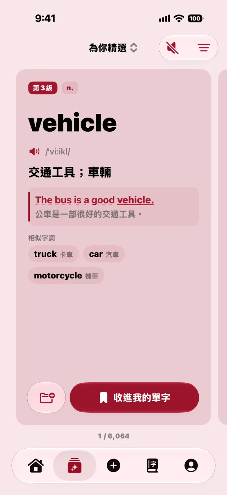

捲字 JuanGo
打開就知道今天要背哪些字
內建 10,400+ 個單字和例句
從國中小到托福
新近推出。0.2.1(14) 測試版的重點。

學習。今天要練什麼，主頁排好了。
今日學習
複習以天為單位到期。答對的字隔久一點再來，答錯的字很快回來。
支援裝置iPhone、Android
單字頁
音標、例句和翻譯都在這裡，可以聽整句例句。
支援裝置iPhone、Android
探索
左右滑單字卡，點兩下收進我的單字。

支援裝置iPhone、Android
學習日曆
記下每天的練習、熟練階梯和勳章。
支援裝置iPhone、Android
字庫和清單
內建字庫和自己的清單都能直接練。
支援裝置iPhone、Android
練習。從認得，練到拼得出來。
認得
翻卡片和英翻中，想不起來可以按不知道。
支援裝置iPhone、Android
想得起來
中翻英和克漏字，從例句的空格選回那個字。
支援裝置iPhone、Android
寫得出來
拼單字有提示，英式和美式拼法都算對。
支援裝置iPhone、Android
聽得出來
聽音選中文或英文，可以放慢再聽一次。
支援裝置iPhone、Android
新增。課本上的字，很快就能加。
查字
輸入英文或中文，找到就能收進來。
支援裝置iPhone、Android
貼上清單
把記事本或聊天裡的單字清單貼進來。
支援裝置iPhone、Android
匯入檔案
支援 .txt、.csv 和 .JuanGo 清單。
支援裝置iPhone、Android
拍照掃描
拍下課本，或從相簿匯入。
支援裝置iPhone
分享代碼
建立或輸入 8 碼分享代碼，最後一次分享 72 小時後失效。
支援裝置iPhone、Android
AI 翻譯
字典沒有的字會自動翻成繁體中文。
支援裝置iPhone
字庫。從國中小到托福。
大考詞彙
基礎 2000、進階 4000、學測 6000+，分成 1 到 6 級。
支援裝置iPhone、Android
國中小 1200
教育部國中小基本字彙。
支援裝置iPhone、Android
多益 TOEIC
TOEIC Service List。
支援裝置iPhone、Android
雅思 IELTS
雅思考試常見字。
支援裝置iPhone、Android
托福 TOEFL
托福考試常見字。
支援裝置iPhone、Android
外觀。換成你喜歡的樣子。
顏色：鳳凰紅
背景
字體
App 的外觀可以選跟隨系統、淺色或深色。

差異。哪裡不一樣，一次看清楚。
iPhone
需要 iOS 26
Android
需要 Android 7.0 以上
單字對戰和好友
單字對戰和好友
課文書架
課文書架
Email 登入同步
Email 登入同步
分享代碼
分享代碼
拍照抓單字
拍照抓單字：沒有
「換一句」例句
「換一句」例句：沒有
Siri 捷徑
Siri 捷徑：沒有
圓體字型
圓體字型：沒有
自填 API 或 Apple Intelligence
捲字 Pro 的雲端 AI
安裝。捲字測試版。
0.2.1(14)是目前的測試版，還沒有上架 App Store 和 Google Play。這版使用了正式金鑰簽名，請盡快更新。
下載
按下面的按鈕，回答 4 個問題後拿到一次性下載連結。
iPhone
需要 iOS 26 以上。用 SideInstaller 以自己的 Apple ID 簽名安裝，iOS 27 以上直接在手機上就能裝，iOS 26 要先用電腦做一次配對檔。
Android
打開 APK，依畫面提示允許安裝未知來源的 App。0.2.1(14)起 Android 版改用正式版簽名，裝過之前任何版本的手機都要先刪掉 App 再裝。刪除前先登入讓進度同步，或到「設定 › 備份」匯出。
常見問題。先看看這裡。
iPhone 和 Android 能同步嗎？
可以。用同一個 Email 登入，兩邊的單字和進度會同步。
Android 版少了什麼？
目前沒有拍照抓單字、「換一句」、Siri 捷徑和圓體字型。
Android 更新時說和現有的套件衝突？
0.2.1(14)起 Android 版改用正式版簽名，之前的版本都不能直接覆蓋。先登入讓進度同步，或到「設定 › 備份」匯出，刪掉舊版再安裝新的 APK。
單字對戰怎麼玩？
登入並做完 18 題程度測驗後，和積分相近的玩家即時對戰。免費版每天 10 場排位賽，捲字 Pro 不限；用房間代碼和朋友對戰不計分、不限場次。
免費 Apple ID 可以用嗎？
可以，但每 7 天要重簽一次，資料不會消失。
Pro 包含什麼？
自己的單字不限個數、課文書架和內建 AI 翻譯。大考詞彙和考古題永遠免費。看 Pro 方案
我的資料存在哪裡？
預設只存在手機。用 Email 登入後會備份到雲端，每個人只能讀寫自己的資料。
字典沒有的字怎麼翻？
可以填入 OpenAI 相容的 API。或使用手機上的 Apple Intelligence、 Apple 翻譯；Android 使用雲端 AI。